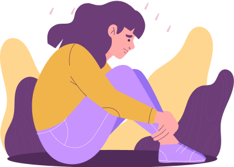

Tes Tingkat Rasa Kesepian
Rasa kesepian yang tinggi dikhawatirkan dapat memicu masalah terhadap kesehatan mental kamu. Cek tingkat kesepianmu sebagai langkah awal dalam mengurangi risiko.
Panduan Pengisian
- Isilah dengan jujur sesuai kepribadianmu.
- Cari tempat yang nyaman dan kondusif
- Hasil tes bisa kamu dapatkan setelah mengisi semua pertanyaan dengan lengkap.
